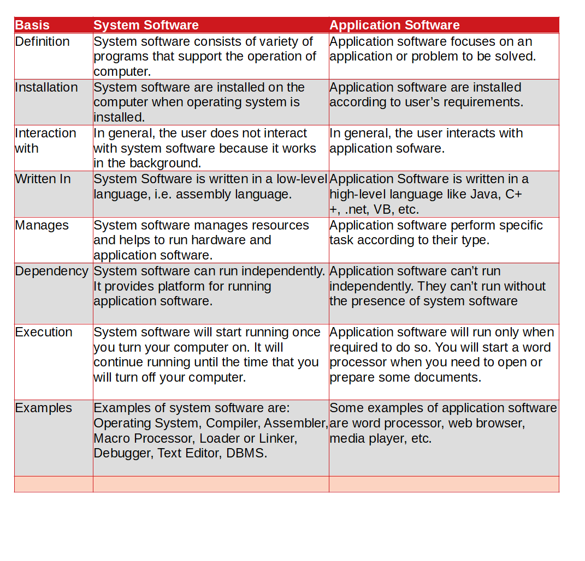

What is the main difference between System Software and Application Software?
The main difference between System Software and Application Software is System Software are programs such as the operating system, that control the operation of a computer and its devices and that enable the computer to run application software whereas Application Software are those programs that enables users to perform specific tasks on a computer, such as writing a letter or playing a game.
One characteristic in which most system software differs from application software is machine dependency. Application Software doesn't depend on the structure of the machine on which it works whereas System Software depends on the structure of the machine on which it is executed.
Analogy
When we see a movie, we see only the actors and the locations shot. But, is that all to movie making? You need the director to visualize the movie and guide the actors, the producers aranges for finance and other resources, while the cameraman plans and executes the shots, however, you do not get to see these people. It is much the same with software. The software that we see and work with is the application software. The software, like behind-the-scene people in the films, stays in the background, though they has very important work to do.
| Basis | System Software | Application Software |
| Definition | System software consists of variety of programs that support the operation of computer. | Application software focuses on an application or problem to be solved. |
| Installation | System software are installed on the computer when operating system is installed. | Application software are installed according to user’s requirements. |
| Interaction with | In general, the user does not interact with system software because it works in the background. | In general, the user interacts with application sofware. |
| Written In | System Software is written in a low-level language, i.e. assembly language. | Application Software is written in a high-level language like Java, C++, .net, VB, etc. |
| Manages | System software manages resources and helps to run hardware and application software. | Application software perform specific task according to their type. |
| Dependency | System software can run independently. It provides platform for running application software. | Application software can’t run independently. They can’t run without the presence of system software |
| Execution | System software will start running once you turn your computer on. It will continue running until the time that you will turn off your computer. | Application software will run only when required to do so. You will start a word processor when you need to open or prepare some documents. |
| Examples | Examples of system software are: Operating System, Compiler, Assembler, Macro Processor, Loader or Linker, Debugger, Text Editor, DBMS. | Some examples of application software are word processor, web browser, media player, etc. |
Why is it difficult to seperate System Software and Application Software?
In practice, the difference between system and application software is not always straightforward. Some programs, such as those used to burn DVDs, were originally viewed as utility programs. Today, these programs typically contain a variety of additional features such as the ability to organize and play music and other media files, transfer videos and digital photos to a computer, edit videos and photos, create DVD movies, copy CDs and DVDs, and create slide shows. Consequently, these programs now fit the definition of application programs more closely.
On the other hand, system software today typically contains several application software components. For example, the Microsoft Windowsoperating system includes a variety of application programs including a Web browser, a calculator, a calendar program, a painting program, a media player, a movie making pro-gram, an instant messaging program, and a text editing program. A program’s classifica-tion as system or application software usually depends on the principal function of the program, and the distinction between the two categories is not always clear cut.
System Software
System Software consists of the operating system and utility programs that control a computer system and allow you to use your computer. These programs enable the computer to boot, to launch application programs, and to facilitate important jobs, such as transferring files from one storage medium to another, configuring your computer to work with the hardware connected to it, managing files on your hard drive, and protecting your computer system from unauthorized use.
System software consists of variety of programs that support the operation of a computer. Examples of system software are: Operating System, Compiler, Assembler, Macro Processor, Loader or Linker, Debugger, Text Editor, DBMS. These software’s make it possible for the user to focus on an application or other problem to be solved, without needing to know the details of how the machine works internally.
Importance of System Software
- With System Software we can interact directly with other parts of computer.
- We can see images, open files easily using system software.
- System software is interface between the hardware and user application.
- System software help to operate hardware without knowing the complex hardware design.
- Helps to understand the architecture of computer on which they run.
Application Software
Application Software includes all the programs that allow you to perform specific tasks on your computer, such as writing a letter, preparing an invoice, viewing a Web page, listening to a music file, checking the inventory of a particular product, playing a game, preparing financial statements, designing a home, and so forth.
Application software is software designed to carry out a specific task. Common types of application software include games, Web browsers, word processing programs, mul-timedia software, and more. Many application software programs today are commercial software programs that are developed and sold for a profit.
One of the most widely used software suites is Microsoft Office. Although they are used for different purposes, most application software programs share some of the same concepts and functions, such as similar document-handling operations and help features. For instance, documents are commonly opened, saved, printed, edited, and formatted in a similar manner. Editing a document changes its content; formatting a document changes its appearance (such as by changing the font face, font size, or font style of text, or by changing the line spacing or margins. Commands can be issued via a variety of methods, such as by using menus, toolbars, keyboard shortcuts, or the Microsoft Office Ribbon—the insertion point typically looks like a blinking vertical line and identifies the current position in a document. Online help is available in many programs
System Software and Machine Architecture
One characteristic in which most system software differs from application software is machine dependency.
Machine Dependent Features
Assembler translates mnemonic instructions into machine code. The instruction formats, addressing modes etc., are of direct concern in assembler design.
Compilers must generate machine language code, taking into account such hardware characteristics as the number and type of registers and the machine instructions available.
Operating Systems are directly concerned with the management of nearly all of resources of a computer system.
Machine Independent Features
On the other hand, there are some aspects of system software that do not directly depend upon the type of computing system being supported. For example, the general design and logic of an assembler is basically the same on most computers.
Some of the code optimization techniques used by compilers are independent of target machines.
Likewise, the process of linking together independently assembled subprograms doesn’t usually depend on the computer being used.